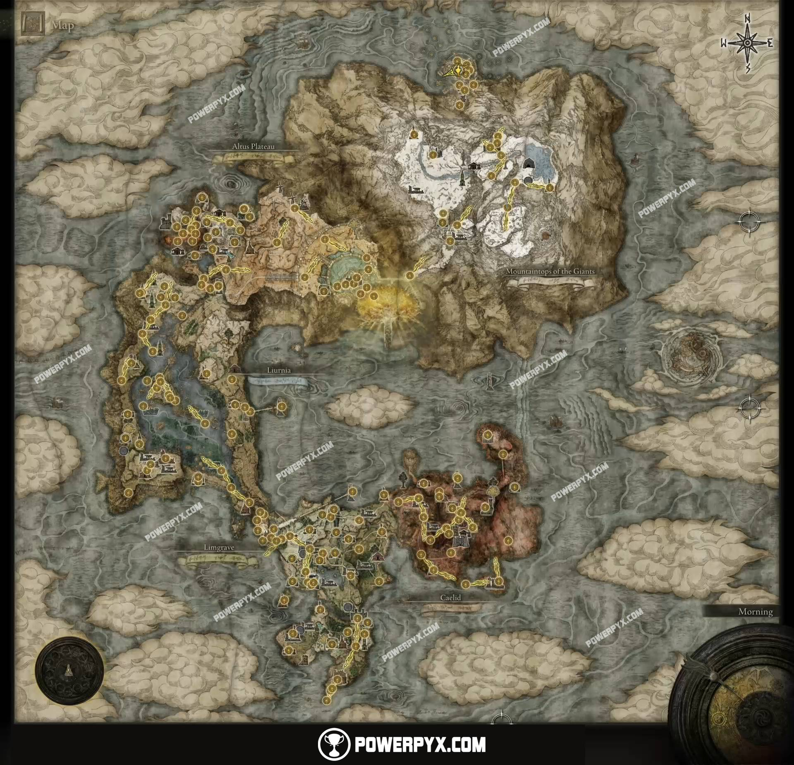

Data de lançamento
Elden Ring foi lançado para todas as plataformas em 25 de fevereiro de 2022.
A data de lançamento original de 21 de janeiro foi anunciada durante o Summer Game Fest 2021,
e o atraso foi revelado via Twitter em 18 de outubro de 2021.
Quem desenvolveu?
Journey through the Lands Between, um novo mundo de fantasia criado por Hidetaka Miyazaki,
criador da influente serie de videogames DARK SOULS, e George R. R. Martin,
autor da série de fantasia best-seller do New York Times, As Cronicas de Gelo e Fogo.
Desvende os misterios do poder do Elden Ring. Encontre adversarios com antecedentes profundos,
personagens com suas proprias motivações unicas para ajudar ou atrapalhar seu progresso e criaturas temiveis.
Desenvolvimento do mapa
ELDEN RING apresenta vastas paisagens fantasticas e masmorras sombrias e complexas que sao conectadas perfeitamente.
Atravesse o mundo de tirar o folego a pe ou a cavalo, sozinho ou online com outros jogadores,
e mergulhe totalmente nas planicies gramadas, pantanos sufocantes, montanhas em espiral,
castelos agourentos e outros locais de grandeza em uma escala nunca vista antes em um titulo da FromSoftware.

Como é a gameplay?
Crie seu personagem no refinado RPG de ação da FromSoftware e defina seu estilo de jogo experimentando
uma grande variedade de armas, habilidades magicas e habilidades encontradas em todo o mundo.
Entre na batalha, acabe com os inimigos um a um usando furtividade ou ate mesmo chame aliados para obter ajuda.
Muitas opções estao a sua disposição enquanto você decide como abordar a exploração e o combate.